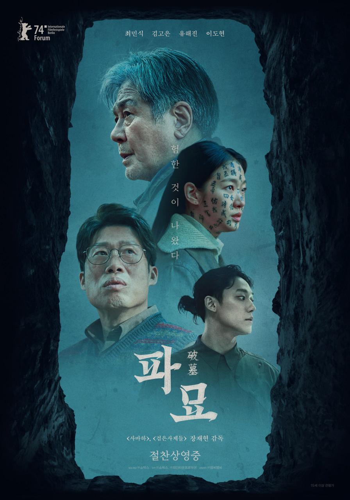

-
Title 크레용 신짱: 암흑 타마타마 대추적 Release 1997.00.00 Runtime 96분 Age Rating 전체 관람가 Director 하라 케이이치 Cast 야지마 아키코, 나라하시 미키, 후지와라 케이지, 고리 다이스케, 시오자와 카네토, 오오타키 신야  옛날에, 타마유랑족과 타마요미즈족이라는 종족이 악마 쟈크를 토기와 두개의 구슬에 봉인했다. 1997년 현재, 타마요미즈족의 후손들은 쟈크를 부활시켜 세계를 정복하고자 한다. 그런데 신 짱이 강가에서 그 구슬을 줍고, 신 짱의 여동생 히마와리(코오로기 사토미 목소리 분)가 그 구슬을 삼켜버려, 타마유랑족의 후손 세 형제가 노하라 일가 전원을 데리고 도망친다. 그러나 타마요미즈족의 보스 타마오 나카무레, 그리고 사람의 마음을 읽을 수 있는 타마요미즈족의 외국의 초능력자 후손 헥슨은 히마와리를 납치해 버리고, 타마유랑족 , 히가시 마츠야마 요네 형사, 타마요미즈족에서 빠져나온 프로레슬러 사타케와 노하라 일가는, 히마와리를 구하고 쟈크의 부활을 저지하기 위해 떠난다.
옛날에, 타마유랑족과 타마요미즈족이라는 종족이 악마 쟈크를 토기와 두개의 구슬에 봉인했다. 1997년 현재, 타마요미즈족의 후손들은 쟈크를 부활시켜 세계를 정복하고자 한다. 그런데 신 짱이 강가에서 그 구슬을 줍고, 신 짱의 여동생 히마와리(코오로기 사토미 목소리 분)가 그 구슬을 삼켜버려, 타마유랑족의 후손 세 형제가 노하라 일가 전원을 데리고 도망친다. 그러나 타마요미즈족의 보스 타마오 나카무레, 그리고 사람의 마음을 읽을 수 있는 타마요미즈족의 외국의 초능력자 후손 헥슨은 히마와리를 납치해 버리고, 타마유랑족 , 히가시 마츠야마 요네 형사, 타마요미즈족에서 빠져나온 프로레슬러 사타케와 노하라 일가는, 히마와리를 구하고 쟈크의 부활을 저지하기 위해 떠난다.Date Time Theater Screen -
Title 대무가 Release 2022.10.12 Runtime 108분 Age Rating 15세 이상 관람가 Director 이한종 Cast 박성웅, 양현민, 류경수, 서지유, 정경호  유아독존 신빨 대신 술빨로 버티는 40대 마성의 무당 '마성준'(박성웅) 백발백중 1타 무당을 꿈꾸며 역술계를 평정한 30대 스타트업 무당 '청담도령'(양현민) 인생역전 갓생을 노리며 10주 완성 무당학원을 등록한 20대 취준생 무당 '신남'(류경수) 신빨 떨어진 무당들이 용하다 소문난 전설의 '대무가' 비트로 뭉쳤다! 그리고 그들을 이용해서 50억 원을 손에 넣으려는 이 구역 미친X '익수'가 판을 벌리고 '대무가' 무당즈는 각자 일생일대의 한탕을 위해 비트에 몸을 맡긴 채 프리스타일 굿판 대결을 펼치는데…
유아독존 신빨 대신 술빨로 버티는 40대 마성의 무당 '마성준'(박성웅) 백발백중 1타 무당을 꿈꾸며 역술계를 평정한 30대 스타트업 무당 '청담도령'(양현민) 인생역전 갓생을 노리며 10주 완성 무당학원을 등록한 20대 취준생 무당 '신남'(류경수) 신빨 떨어진 무당들이 용하다 소문난 전설의 '대무가' 비트로 뭉쳤다! 그리고 그들을 이용해서 50억 원을 손에 넣으려는 이 구역 미친X '익수'가 판을 벌리고 '대무가' 무당즈는 각자 일생일대의 한탕을 위해 비트에 몸을 맡긴 채 프리스타일 굿판 대결을 펼치는데…Date Time Theater Screen -
Title 여름을 향한 터널, 이별의 출구 Release 2023.09.14 Runtime 82분 Age Rating 12세 이상 관람가 Director 타구치 토모히사 Cast 스즈카 오지, 이토요 마리에  터널 안 10초, 바깥 세상에선 6시간... 소원을 이루어 주지만 안팎의 시간이 다르게 흐르는 '우라시마 터널'을 발견한 고등학생 '카오루'와 전학생 '안즈' 터널의 비밀을 알아내기 위해 뜨거웠던 여름을 함께 보낸 두 사람은 어느새 서로에게 가장 소중한 존재가 되는데...
터널 안 10초, 바깥 세상에선 6시간... 소원을 이루어 주지만 안팎의 시간이 다르게 흐르는 '우라시마 터널'을 발견한 고등학생 '카오루'와 전학생 '안즈' 터널의 비밀을 알아내기 위해 뜨거웠던 여름을 함께 보낸 두 사람은 어느새 서로에게 가장 소중한 존재가 되는데...Date Time Theater Screen -
Title 바비 Release 2023.07.19 Runtime 114분 Age Rating 12세 이상 관람가 Director 그레타 거윅 Cast 마고 로비, 라이언 고슬링  내원하는 무엇이든 될 수 있는 '바비랜드'에서 살아가던 '바비'가 현실 세계와 이어진 포털의 균열을 발견하게 되고, 이를 해결하기 위해 '켄'과 예기치 못한 여정을 떠나면서 펼쳐지는 이야기
내원하는 무엇이든 될 수 있는 '바비랜드'에서 살아가던 '바비'가 현실 세계와 이어진 포털의 균열을 발견하게 되고, 이를 해결하기 위해 '켄'과 예기치 못한 여정을 떠나면서 펼쳐지는 이야기Date Time Theater Screen -
Title 파묘 Release 2024.02.22 Runtime 134분 Age Rating 15세 이상 관람가 Director 장재현 Cast 최민식, 김고은, 유해진, 이도현 
미국 LA, 거액의 의뢰를 받은 무당 ‘화림’(김고은)과 ‘봉길’(이도현)은 기이한 병이 대물림되는 집안의 장손을 만난다. 조상의 묫자리가 화근임을 알아챈 ‘화림’은 이장을 권하고, 돈 냄새를 맡은 최고의 풍수사 ‘상덕’(최민식)과 장의사 ‘영근’(유해진)이 합류한다. “전부 잘 알 거야… 묘 하나 잘못 건들면 어떻게 되는지” 절대 사람이 묻힐 수 없는 악지에 자리한 기이한 묘. ‘상덕’은 불길한 기운을 느끼고 제안을 거절하지만, ‘화림’의 설득으로 결국 파묘가 시작되고… 나와서는 안될 것이 나왔다.Date 2024.03.12 Time 16:05 ~ 18:29 Theater CGV (부천) Screen